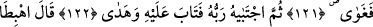

HZ. ÂDEM’İN
CENNETTEN ÇIKARILMASI
115. Andolsun biz, daha önce de Âdem’e ahit (emir ve vahiy) vermiştik. Ne var ki
o, (ahdi) unuttu. Onda azim de bulmadık.
116. Bir zaman biz meleklere: “Âdem’e secde edin!” demiştik. Onlar hemen
secde ettiler; yalnız İblis hariç. O, diretti.
117. Bunun üzerine şöyle dedik: “Ey Âdem! Bu, hem senin için hem de eşin için
büyük bir düşmandır. Sakın sizi cennetten çıkarmasın; sonra yorulur, sıkıntı
çekersin!
118. Şimdi burada senin için ne acıkmak vardır, ne de çıplak kalmak.
119. Yine burada sen, susuzluk çekmeyecek, sıcaktan da bunalmayacaksın.”
120. Derken şeytan onun aklını karıştırıp “Ey Adem! Sana ebedîlik ağacını ve
sonu gelmez bir saltanatı göstereyim mi?” dedi.
121. Nihayet ondan yediler. Bunun üzerine kendilerine ayıp yerleri göründü.
Üstlerini cennet yaprağı ile örtmeye çalıştılar. (Bu sûretle) Âdem Rabbine âsi olup
yolunu şaşırdı.
122. Sonra Rabbi onu seçkin kıldı; tevbesini kabul etti ve doğru yola yöneltti.
123. Dedi ki: “Birbirinize düşman olarak hepiniz oradan (cennetten) inin! Artık
benden size hidayet geldiğinde, kim benim hidayetime uyarsa o sapmaz ve bedbaht
olmaz.”